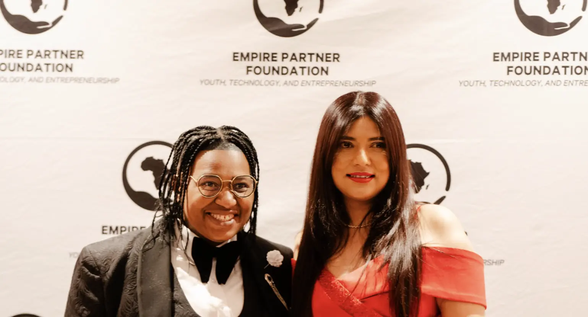
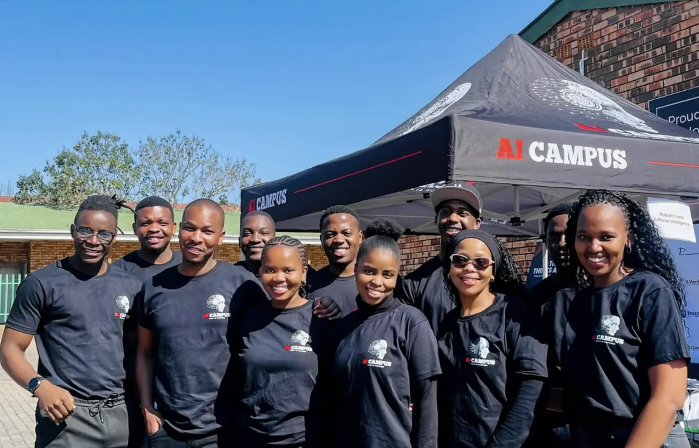
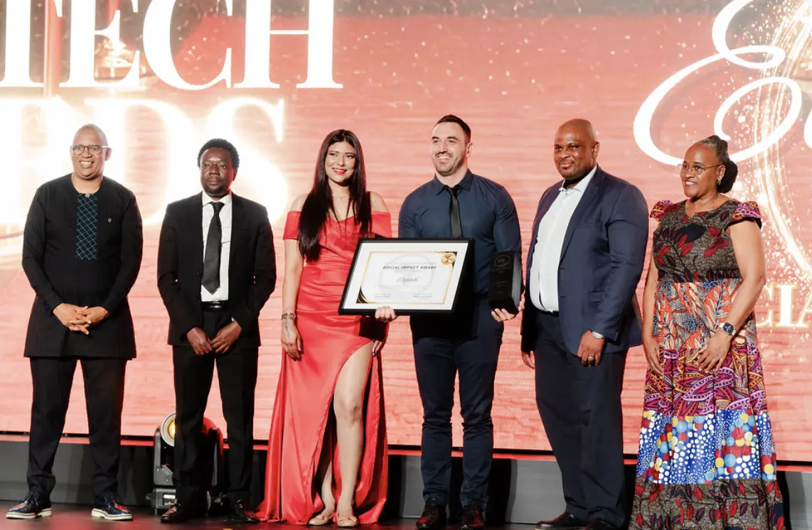
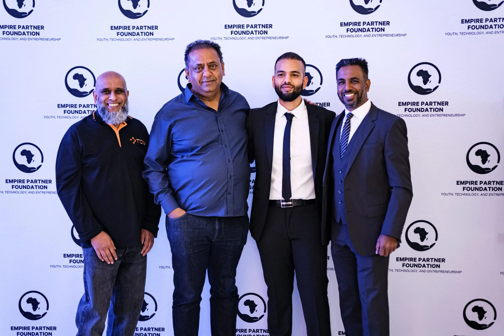

Engineering Africa's Digital Future
The EPF Ecosystem is a Smart ICT Innovation Ecosystem and a Pan-African AI platform. We operate as a digital infrastructure pipeline designed to move beyond traditional aid by building a self-sustaining, technology-driven future for the continent.
The Core Identity
The EPF Ecosystem is a Smart ICT Innovation Ecosystem and a Pan-African AI ecosystem. We operate as a digital infrastructure pipeline designed to move beyond traditional aid by building a self-sustaining, technology-driven future for the continent. We manage the entire lifecycle of innovation, from identifying raw talent and mission-driven problem solving to deploying de-risked, enterprise-grade AI solutions.
Our Four Interconnected Entities
Together, our four entities create a sustainable pipeline — from problem identification to funding and workforce readiness — ensuring technology serves as a catalyst for economic growth.

Empire Partner Foundation
A sustainable Section 18A Non-Profit Organisation driving social innovation and entrepreneurship without donor reliance.

AI Campus
Bridging the critical gap between university theory and industry execution to create a future-proofed workforce equipped with 4IR capabilities.

EPF Tech Fund
A private equity venture building arm specialising in IoT, Data, and Fintech — scaling proprietary software solutions that fix public sector bottlenecks at institutional scale.

EPF SSIF
The FSCA-regulated Sovereign Social Impact Fund — managed by Effectus Capital Management. Deploys institutional capital at scale through the SSIN instrument.
The Architect of the Ecosystem
"I decided to dedicate the rest of my working life to one thing: improving the public sector through technology. Not through charity. Not through protest. Through proof."
The EPF Ecosystem was born from a single question asked in 2014: What will Africa look like when our children are the working population? The answer required not just a foundation or a fund — but a complete closed-loop system.
Today, that system spans four FSCA and NPO-regulated entities, 28 active internal entities, and verified deployments at Vodacom, PepsiCo, UNICEF, Rand Water, and 30+ countries.
Explore Our Impact Model"Africa's digital century is beginning. The continent's greatest asset is its young people. We've spent a decade building the system to channel their talent into the solutions that matter."
Identify Talent
and Challenges
The EPF Foundation starts by identifying talent and public sector challenges through the Solve for X programme — Africa's most active innovation hackathon series. Over 40 events annually uncover the next generation of African tech entrepreneurs.
Train and Build
AI Campus bridges the critical gap between university theory and industry execution. Graduates leave with real-world experience building enterprise-grade software products — not just academic credentials.
Fund and De-risk
The EPF Tech Fund scales proprietary software solutions that fix public sector bottlenecks — taking de-risked, post-revenue enterprises that have graduated through Scout and Equip, and deploying them at institutional scale. We bring capital and strategic firepower, not just cheques.
Deploy and Deliver
The Trust Us PMO division physically deploys technology on the ground — ensuring 100% product-market fit. This is the step most ecosystems miss. We do not just fund ideas, we deploy them.
The Digital
Nervous System
The Visible Social Impact (VSI) platform is the backbone of the entire ecosystem. Every cent is tracked. Every milestone is recorded. Every outcome is verified and reported in real time — audit-ready at all times.
Live dashboards for investors, the Auditor-General, and corporate partners.
Automated data validation ensures accuracy across all reporting streams.
Every transaction and milestone is logged and exportable for the Auditor-General.
Partner-specific views showing exactly the data that matters to each stakeholder.
EPF Ecosystem Operates Multiple Hubs Across Africa
The closed-loop pipeline is not just digital — it has physical infrastructure across the continent. Each hub serves a specific function in the Scout, Equip, Scale, Execute model.
Industrial & Utilities Centre
Developing over 15 IoT sensors and remote monitoring solutions for water, energy, and utilities deployed across South African municipalities.
Technology & Research Impact Centre
Focused on building models to measure and verify social impact — feeding live data into the VSI platform for real-time Auditor-General ready reporting.
AI Campus
Where software developers build sustainable, scalable software solutions. Home of the 6-month AI Academy programme with 100% graduate placement rate.
Innovation Centre
Dedicated to developing models that quantify and validate social impact — supporting EPF's Pan-African expansion across SADC member states.
Development Campus
Works on creating frameworks to assess and confirm the effectiveness of social impact initiatives across West Africa, feeding into the global VSI system.
Operating Across Africa
The EPF Ecosystem is not a virtual model. Five active hubs across the continent anchor our pipeline with physical presence — from IoT deployments in Cape Town to development campuses in Accra and Harare.
Partner With EPF Ecosystem
Join us in building Africa's digital future. Whether you are an investor, corporate partner, or government entity, there is a place for you in the ecosystem.